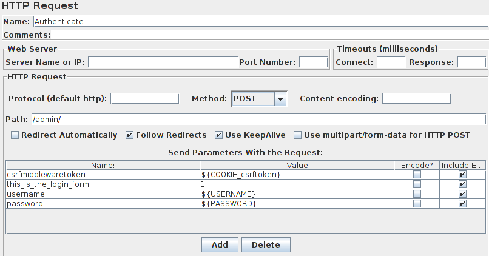

Working around CSRF protection

CSRF - This type of attack occurs when a malicious Web site contains a link, a form button or some javascript that is intended to perform some action on your Web site, using the credentials of a logged-in user who visits the malicious site in their browser.